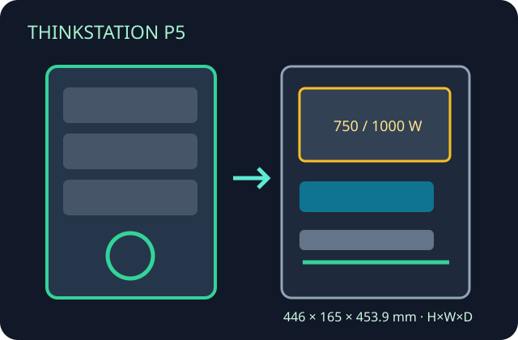

[ SINGLE-SOCKET XEON W WORKSTATION ]
Lenovo ThinkStation P5
Purpose-built tower with system-specific power and thermal assemblies; use the current machine-type specification for options.

Specifications & fit
| Model / revision | ThinkStation P5 workstation tower; platform and supported parts depend on generation/machine type. |
|---|---|
| Board form factor | Lenovo proprietary workstation board; tower is not specified as an ATX, E-ATX or microATX bare enclosure. |
| Dimensions | 446 × 165 × 453.9 mm (H × W × D), including feet as stated in PSREF. |
| PSU | Fixed OEM 750 W or 1000 W, 92% efficiency options; PSU and graphics choices are configuration-linked. |
| GPU / cooler / radiator fit | Supports Lenovo-qualified professional graphics, including dual-card configurations where listed for the selected PSU/slots. CPU cooling is OEM heatsink/fan and ducted airflow; no generic radiator dimensions or aftermarket AIO clearance is specified. |
| Drive bays | Up to three 3.5-inch SATA positions and multiple M.2 NVMe drives (up to seven M.2 in supported configurations, including optional front access); cage choice affects fit. |
| Airflow | Front intake through OEM fan and drive/thermal paths toward CPU, memory and PCIe devices; retain ducts and fan modules. No standard retail case-fan map. |
| Serviceability / compatibility | Lenovo-designed service access and replaceable modules; match drive cage, front M.2 carrier, PSU, CPU cooler and GPU support bracket to the machine type. Not standard-board compatible. |
Manufacturer sources
- Lenovo PSREF — ThinkStation P5Configuration-level dimensions, power, storage and graphics specifications.
- Lenovo — ThinkStation P5 datasheetPlatform overview and chassis configuration details.
- Lenovo — ThinkStation P5 Hardware Maintenance ManualOEM service procedures and component fit references.